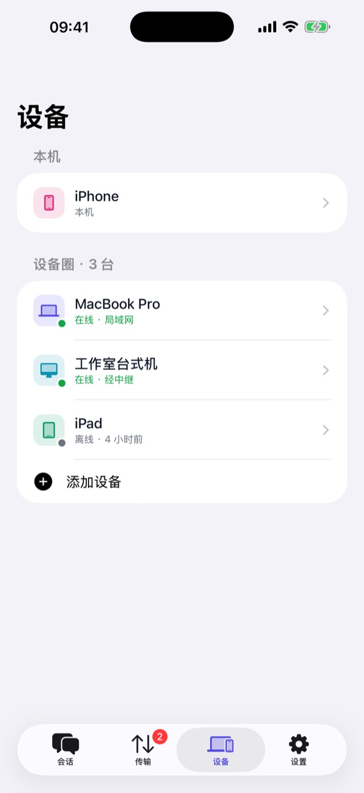
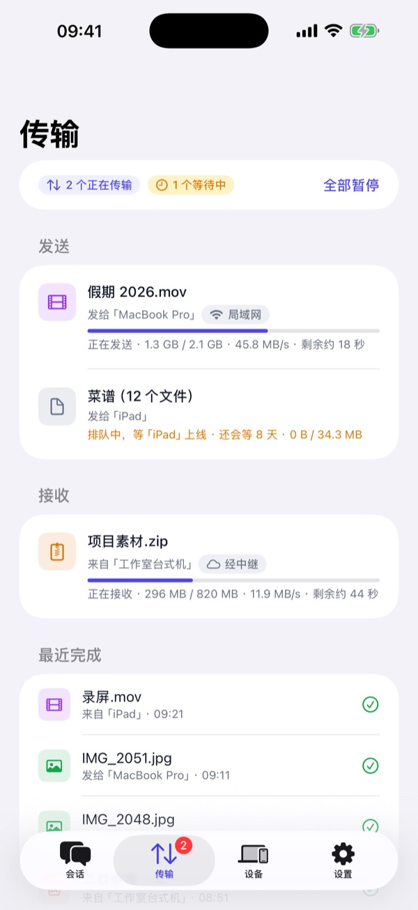
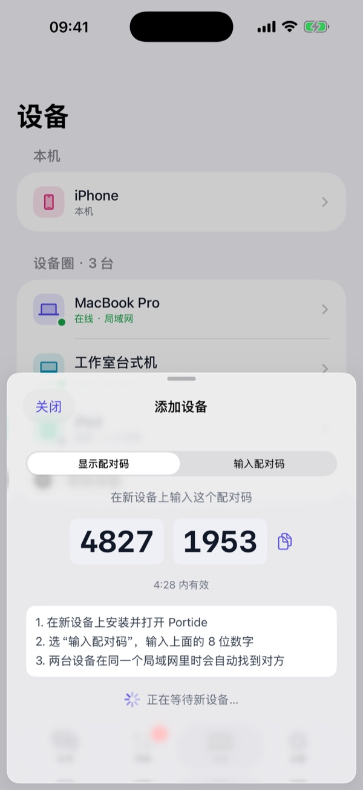
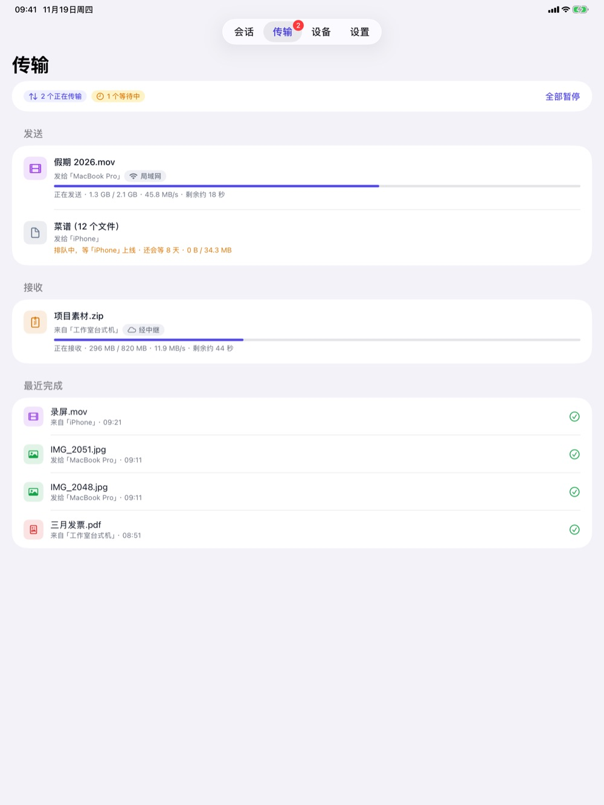
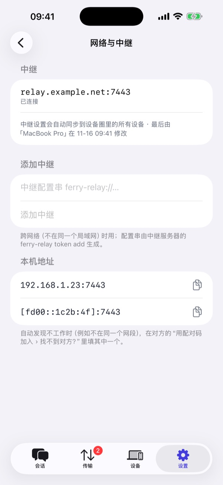

文件在你的设备之间传，不经过别处
Portide 在你的 Mac、Windows、Linux 电脑和 iPhone、iPad 之间互传照片、视频、文件和文字。用配对码配对一次，以后像发消息一样发。端到端加密，不用注册，不经过云端。
- macOS
- Windows
- Linux
- 命令行
- iPhone 和 iPad


配对一次，以后直接发
两台设备，九十秒
要设置的更少，要信任的也更少
个账号要注册。不要邮箱，不要手机号，不要密码。
字节的文件存在我们的服务器上。我们从来拿不到，也就不会弄丢。
配对码，两台设备配对一次。之后它们自己就能找到对方。
种电脑系统在同一个设备圈里：Mac、Windows 和 Linux，再加上 iPhone 和 iPad。
隐私靠设计，不靠承诺
没有账号，没有统计，我们的服务器上没有你的任何东西。隐私来自 Portide 的构造方式，代码公开，谁都可以检查。
- 密钥不离开设备每台设备首次启动时生成自己的 Ed25519 身份密钥，存在系统钥匙串里。
- 配对没法冒充配对码用 CPace（一种基于口令的密钥交换）校验。输错配对码或中间人攻击，配对只会失败。
- 传输和存储都加密设备之间用 QUIC（TLS 1.3）；本地数据库里的消息正文和文件名用 XChaCha20-Poly1305 加密。
- 移出设备，立刻锁在门外把一台设备移出设备圈，会更换整个设备圈的密钥。
在 iPhone 和 iPad 上，一样顺手
从照片、文件或任何应用分享过来。收到的照片和视频直接存进相册。大文件有进度，能暂停、能续传。



在家还是在外，总能连上
在同一个 Wi‑Fi 下，设备会互相发现并直连，速度只取决于你的网络。不在一起时，它们通过中继碰头，并尝试打通直连。UDP 被封时自动改用 TCP。
中继服务器免费、开源，任何一台小型 Linux 服务器都能跑，也可以用 Docker。
电脑上全部免费，没有附加条件
不用账号，没有广告，没有应用内购买。不管设备跑什么系统，都能放进同一个设备圈。
iPhone 和 iPadiOS / iPadOS 17 或更高
- 从任何应用分享
- 收到的照片直接存进相册
- 中文和英文界面
全部下载、校验值和安装步骤 →
Windows 安装包暂未代码签名。Android 版在计划中。
你可能想问的，都在这里
Portide 收费吗？
Mac、Windows、Linux 版和命令行不收费，都是开源的，中继服务器也可以免费自己搭。iPhone 和 iPad 版在 App Store 一次性买断，支持家人共享，没有订阅。如果以后推出收费的官方中继，会在收费前讲清楚。
需要注册账号或者连互联网吗？
完全不用账号。在同一个 Wi‑Fi 下，设备互相发现并直连，不经过互联网。只有设备不在同一网络时才需要中继。
为什么 iPhone 只在打开 Portide 时才能接收？
iOS 不允许应用在后台一直保持网络连接。Portide 在前台或刚切到后台时能接收；这期间发来的内容会在发送方那里排队，下次打开 Portide 时送达。
中继能看到什么？
设备的公网 IP 地址、路由 ID（设备公钥的哈希）、连接开始和结束的时间，以及传了多少字节。它看不到文件内容、文件名、文字、设备名，也不知道你的设备圈里有谁，转发的内容一律不存。
在公共 Wi‑Fi 上用安全吗？
安全。所有内容端到端加密。设备在网络上广播的名字每 10 分钟换一次，只有你自己的设备认得出，别人只能看出有台设备在用 Portide，看不出是谁的。
收到的文件存在哪里？
电脑上存进你选的文件夹，就是普通文件。iPhone 和 iPad 上存在"文件"应用里 Portide 的文件夹；如果你允许，照片和视频会存进相册。
设备丢了怎么办？
在任意另一台设备上把它移出设备圈。设备圈的密钥会随之更换，丢失的设备连不进来，也读不到之后发的任何内容。
有 Android 版吗？
在计划中。目前支持 macOS、Windows、Linux，以及 App Store 上的 iPhone 和 iPad 版。
一分钟后，发出第一个文件
在解压后的中继服务器目录里，用 Docker 启动：
docker build -t portide/relay . && docker run -d --name portide-relay --restart unless-stopped -p 7443:7443/udp -p 7443:7443/tcp -v portide-relay:/data -e PORTIDE_RELAY_ADDR=你的服务器IP:7443 portide/relay